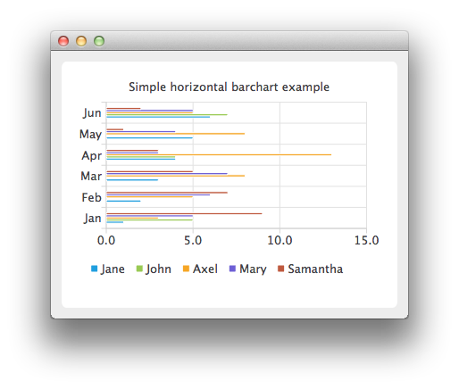

QHorizontalBarSeries Class
The QHorizontalBarSeries class presents a series of data as horizontal bars grouped by category. More...
| Header: | #include <QHorizontalBarSeries> |
| Instantiated By: | HorizontalBarSeries |
| Inherits: | QAbstractBarSeries |
Public Functions
| QHorizontalBarSeries(QObject *parent = nullptr) | |
| virtual | ~QHorizontalBarSeries() |
Reimplemented Public Functions
| virtual QAbstractSeries::SeriesType | type() const override |
Detailed Description
This class draws data as a series of horizontal bars grouped by category, with one bar per category from each bar set added to the series.
See the horizontal bar chart example to learn how to create a horizontal bar chart.

See also QBarSet, QBarSeries, QPercentBarSeries, QAbstractBarSeries, QStackedBarSeries, QHorizontalStackedBarSeries, and QHorizontalPercentBarSeries.
Member Function Documentation
QHorizontalBarSeries::QHorizontalBarSeries(QObject *parent = nullptr)
Constructs an empty horizontal bar series that is a QObject and a child of parent.
[virtual] QHorizontalBarSeries::~QHorizontalBarSeries()
Removes the horizontal bar series from the chart.
[override virtual] QAbstractSeries::SeriesType QHorizontalBarSeries::type() const
Reimplements an access function for property: QAbstractSeries::type.
Returns the horizontal bar series.